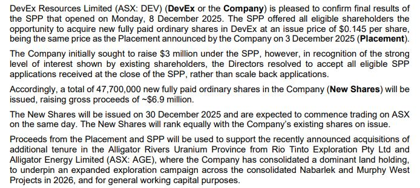
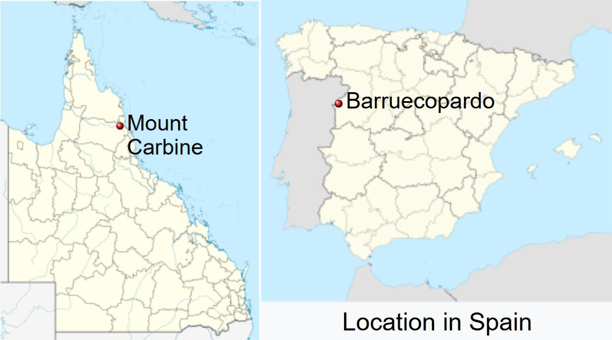

Disclaimer - Blog is for informational purposes only.
Pinned: Top-notch words from former CEO of Deep Yellow Limited, John Borshoff ASX:DYL
Posted on January 13, 2025
"I believe the utilities over the last 15 years through predatory pricing through using the inventory as a bloody hammer and keeping prices down they virtually put the industry to its knees and the whole feature of that period was price. So then what you ended up is the industry that we have today.
Well you know before 2023 for sure we had people who couldnt raise money and they couldnt even raise money to finish off their feasibility study apart from few expections.
So now the industry is not now for the utilities to say "oh you know somehow things will happen"
They have to engage in security of supply, they have to recapitalize the industry that has to be through higher prices of uranium because it is not just peaking out a little bit of production out of paladin a little bit out of boss
It is a whole new world production has to come with a whole muscled up supply sector and I see that supply sector is still a long way from actually becoming that
And I dont see the sort of big multionationals coming in you know and say "oh we will try this uranium" where they got people and they got resources and so it's weaker than what people understand.
And then everybody sends to say "oh bloody borshoff you say" Its a fact there is no industry as pummel as the supply sector
no interest here that people left the industry.
And you've in the last 9 months your demand has gone up unbelievably and even if not all of that gets activated when you look at the supply sleepy hollow nothing is happened and I'm not talking about the paladins and the bosses these are and mcarthurs these are mothball projects that are just now replicating what mine production was in 2012 150 million pounds, not one of them is contributing to additive pounds you give the replacive pounds from the underfeeding that is evaporating.
So where the hell is this new production going to happen? Which and in terms of "yeah i dont need any production from 2026 and I dont need any" bloody hell in terms of time 2030 is tommorow. In terms of mining in terms of getting organizing."
-John Borshoff
Devex Resources last raise expanded from $35M to $38.9M ASX:DEV
Posted on December 24, 2025
Happy Christmas! Share purchase plan (SPP) expanded from $3M to $6.9M AUD.
That supports tenement acquisitions from Rio Tinto and Alligator Energy + drilling campaign in coming years.

Source: Devex ASX announcement 23/12/2025
Tim Goyder's companies have great history and I prefer uranium explorer which have
1. Drill ready targets in Northwest which has seen historical drilling activity but still remains lightly explored
2. Safe jurisdiction with history of uranium mining
3. Board with good track record and skin in the game
3. No promotion expenses and still oversubscribed capital raise
4. No warrants or RSU grants, only fair amount of options above current share price
Recent upscale means Tranche 1 ($16M) + Tranche 2 ($16M) + SPP of $6.9M. Totals $38.9M AUD before costs. (prev. $35M)
Trance 1 (110.4 million) + Trance 2 (110.3 million) + SPP of $6.9M (47.6 million)
Totals 268.3 million new shares + Existing 441.69M shares + 10.5M options and performance rights
Fully diluted share basis is now = 720.49 million shares
Whole raise of $38.9M AUD (before costs) dilutes 37.24% existing shareholders but there is no RSU grants or warrants.
I believe that Guy Keller is talking about Devex
Source: Crux Investor - The 3 Catalysts Still Missing Before the Next Big Uranium Rally
$3.9M (26.6 million placement shares) Board participating in Tranche 2 will need shareholder approval in January.
Also grant of options needs approval in January.
For Brendan Bradley and Matthew Yates 3 million options each for 3-year period and exercisable at $0.23.
For new Marnie Finlayson 10 million options, 5 million exerciseable at $0.18 and 5 million exerciaseable at $0.24.
Devex Resources ASX:DEV
Posted on December 13, 2025
Tim Goyder's uranium explorer in Northern Territory, Australia - New blood on the board: Marnie Finlayson (former Rio Tinto battery materials managing director) Matthew Yates (co-founder and Executive Chairman of OreCorp Limited, leading it through to its acquisition by Perseus Mining for $280 million in 2024.) New funding round in parts but approx. ~$35M AUD. No warrants, no RSUs to the board, only 6 million options exercisable at 0.23 AUD for a 3 year period. There have been drillers in the Northern Territory but not nearly as many as in Athabasca. Well-known mines have been Jabiluka 307Mlbs 0.55% U3O8 and Ranger 300Mlbs 0.23% U3O8 and Nabarlek in the 1980s which mined 546 tonnes of ore 1.84% U3O8 and produced 11,8 t ~24Mlbs U3O8. I understood that the terrain for drilling is much better terrain than in Athabasca. When the rainy season ends in April, drilling will begin around Nabarlek Devex has the largest drilling permit area in the Northern Territory. Devex has recently purchased Rio Tinto's exploration permit areas and Alligator Rivers application and granted licenses. (ARUP). I don't own a position but when it comes down -30% (uranium usually comes) I'll take a slice. Only Australian or New Zealand citizens can participate in the current funding round. Tried to keep my hands off the explorers but a little slice of Devex doesn't sound bad.


Source: Devex Investor Presentation 1/12/2025

Source: Devex ASX announcement 3/12/2025

Source: Devex ASX announcement 10/12/2025
Uranium update and history recap
Posted on December 23, 2025
Spot price: Numerco: 80/lb Bid 82/lb Ask
LT price: Cameco: November. $86/lb
LT-contracting: YTD to December 8 was 82 Mlbs

Source: Cameco - Supply & demand
Assuming UxC acknowledges only 80% of the LT-market. With that information I assume that total LT-market volume YTD was ~102 Mlbs (100%)
Below replacement rate and LT-price is up 6% ($81 to $86) This is a huge tell. Just imagine Long term price movement when market volume goes above replacement rate ~152 Mlbs reactor requirement + New builds and secondary demand which include financial players, overfeeding and nuclear marine.
Spot price started this year $73 a pound. March low was $63 and September high was $84 and today $81.
I noticed that spot price front runs equities. During March spot market already bottomed when April lows was coming. And during REE/uranium euphoria spot price climbed to $84 in September. Equities were still running couple weeks during October.
Note that SPUT raising cash via market ATM, private placements and bought deal financings impact Spot market. (pp. $25.5M May 13th. & bought deal financing. $200M June 16th.)

Analysis of EQ resources ASX:EQR
Posted on December 25, 2025
EQR is a tungsten mining company with 2 mines. Mt Carbine in Queensland, Australia and Saloro in Spain. 
Cameco - Best name: pros & cons NYSE:CCJ TSX:CCO
Posted on December 13, 2025
CCJ
Petrotal TSX:TAL
Posted on December 28, 2025
Petrotal is great example where company old folks are selling due dividend suspension and stock gets cheap.
Dividend cut was clever choice from board, I absolutely prefer dividend cut then limiting operations in Bretana field.